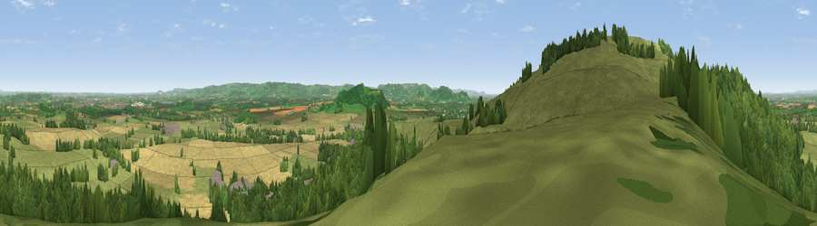

Viewpoint near Ashton Under Hill
#3736 in England · top 10% of its area beats it · near Ashton Under HillWhere it is
The exact computed spot (SO 99325 38775). Click the marker for map links.
The view, rendered

A 360° render of this exact spot computed from the terrain model, tree cover and land cover — summer colours, afternoon light, calibrated against photographs of famous viewpoints. Real trees, hedges and buildings will differ in detail.
The panorama
Grey silhouette: terrain skyline in each direction (720 bearings, Earth curvature and refraction included). Dashed green: skyline with trees (+15 m) and buildings (+8 m) as obstacles. Blue strip: how far the ground is visible on each bearing.
Where the view opens
Wedge length = distance to the farthest visible ground on that bearing (vegetation-aware). Rings at 10, 25 and 50 km.
What fills the view
40% grassland · 36% woodland · 22% cropland · 2% built-up
Angular shares of the visible panorama (visual magnitude), not map area. Landscape diversity 0.50 (0–1 Shannon).
Key numbers
More beautiful places nearby
The staircase of upgrades: each row has a higher view potential than everything closer. Driving times are estimates from straight-line distance, calibrated against real road routing — check an actual route before setting out.
| Place | Direction | Drive | Score |
|---|---|---|---|
| Viewpoint near Elmley Castle | WNW · 2 km | ~5 min | 80.5 |
| Bredon Hill | WNW · 4 km | ~9 min | 83.0 |
| Black Hill | W · 23 km | ~37 min | 83.1 |
| Pinnacle Hill | W · 23 km | ~38 min | 85.7 |
| Worcestershire Beacon | WNW · 23 km | ~38 min | 87.1 |
| Viewpoint near West Quantoxhead | SW · 130 km | ~154 min | 87.9 |
| Viewpoint near West Quantoxhead | SW · 130 km | ~154 min | 88.7 |
| The Knoll | SSW · 158 km | ~180 min | 91.0 |
52.04737, -2.01125 · source: screening · position refined by local search. Computed location — check access rights before visiting.